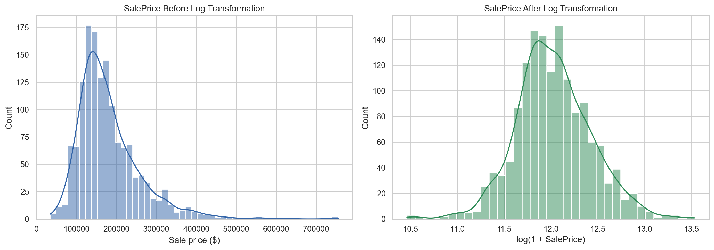
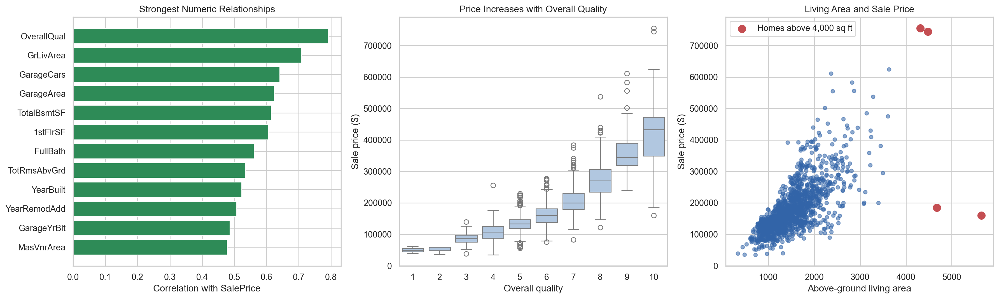
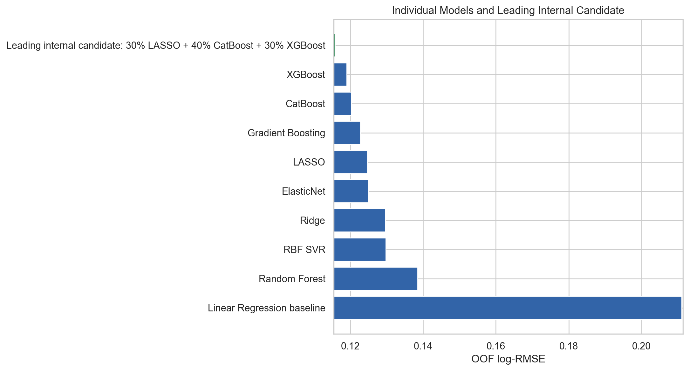
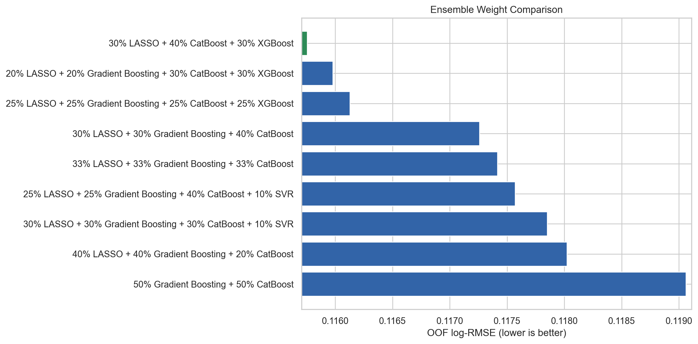
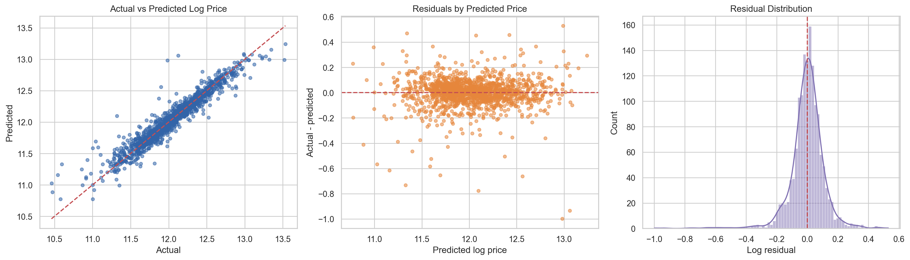

Predictive modeling · Kaggle competition
House price prediction built on validation, not leaderboard guesswork.
An end-to-end regression workflow that turns messy housing data into a leakage-safe ensemble and a top 3.3% public result.
Mike Chen · Machine learning portfolio · September 2026
Public leaderboard
Top 3.3%
Rank115
Entries~3,449
Score0.11843
MetricLog-RMSE
The challenge
Predict sale prices from 79 mixed-quality property features.
The Ames dataset combines continuous measurements, quality ratings, dates, rare categories, overlapping property measures, and missing values that sometimes mean “feature not present.” The modeling problem was as much about representing the data correctly as selecting an algorithm.
1,460training homes
79original predictors
9model families compared
5-foldout-of-fold validation
Data diagnosis
The analysis started with meaning, not imputation defaults.
Missing values, skew, rare categories, and unusual homes were reviewed before modeling so preprocessing choices reflected how the housing variables were actually defined.


Analytical approach
Every important modeling choice was tested.
Meaning-based cleaning
Structural NA values became explicit absence categories or zeros; unknown values used fold-learned imputers.
Leakage-safe validation
Preprocessing, scaling, encoding, and model fitting stayed inside each training fold.
Model diversity
Linear, regularized, kernel, bagging, and boosting methods were compared under the same folds.
Residual-led ensembling
Models were combined when their errors were complementary, not simply because they scored well alone.
Model comparison
Boosting led; regularization remained useful.
XGBoost was the strongest individual model. LASSO remained valuable because its linear errors differed from the tree-based models.

| Model | OOF Log-RMSE | Role in the analysis |
|---|---|---|
| Linear Regression | 0.21105 | Starting benchmark |
| Random Forest | 0.13844 | Nonlinear screen |
| RBF SVR | 0.12975 | Alternative nonlinear model |
| Ridge | 0.12958 | Regularized benchmark |
| ElasticNet | 0.12492 | Mixed regularization |
| LASSO | 0.12465 | Best linear model |
| Gradient Boosting | 0.12278 | Strong boosting benchmark |
| CatBoost | 0.12020 | Strong categorical learner |
| XGBoost | 0.11897 | Best individual model |
Best linear model0.12465LASSO OOF Log-RMSE
Best individual model0.11897XGBoost OOF Log-RMSE
Best internal ensemble0.11575Five-fold OOF Log-RMSE
Best public submission0.11843Kaggle public score
Ensemble selection
Internal validation and public evidence stayed separate.
The lowest internal score used LASSO, CatBoost, and XGBoost. A LASSO, Gradient Boosting, and CatBoost blend produced the strongest public submission.


What changed because of the analysis
Four decisions with measurable consequences.
01
Transform the target. Log scaling reduced skewness from about 1.88 to 0.12 and aligned training with the competition metric.
02
Keep the unusual homes. Removing houses above 4,000 square feet worsened LASSO OOF Log-RMSE from 0.12482 to 0.13214, so every training row was retained.
03
Add targeted features. Quality, age, basement, and garage interactions slightly improved the LASSO direction.
04
Blend different errors. Sparse linear and tree-based models improved the ensemble because their residual patterns were not identical.
Limitations
A strong result with clear boundaries.
- One shuffled five-fold split does not capture all validation uncertainty.
- Hyperparameter and ensemble-weight searches were intentionally limited.
- Rare and high-end homes remain difficult because comparable examples are scarce.
- Public leaderboard performance is supporting evidence, not a substitute for internal validation.
Explore the work
Review the full analytical trail.
The notebook contains the reproducible workflow, model comparisons, diagnostics, and the evidence behind each major decision.
Sources: Kaggle House Prices and De Cock (2011), Ames Housing.